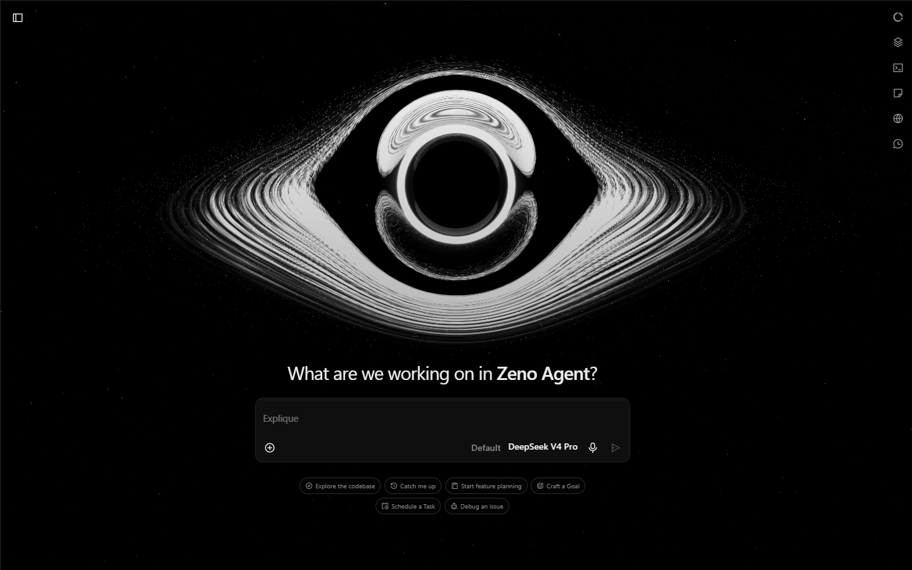
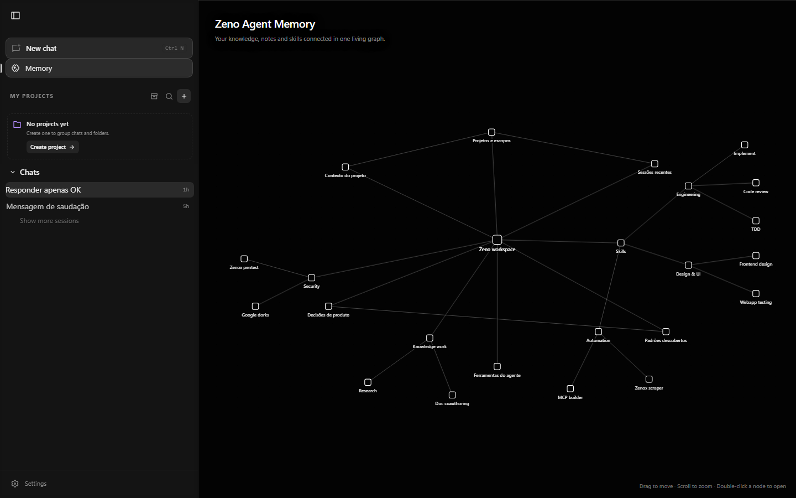

Um assistente de IA que faz o trabalho por você
Peça no seu idioma: pesquisar, organizar dados, criar planilhas, transcrever áudios, mexer em arquivos. O Zeno executa — sozinho, no seu computador. E quanto mais você usa, melhor ele fica.
Preço será anunciado exclusivamente na comunidade · Acesso antecipado para membros
do início ao fim
graças ao cache inteligente
para usar no dia a dia
passando, sempre
APRESENTAÇÃO
Veja o Zeno por dentro
Telas reais do produto: onde tudo começa e onde tudo é lembrado.


COMO ELE PENSA
O Loop Dialético
Inspirado na dialética dos filósofos gregos: em vez de aceitar a primeira resposta, o Zeno propõe, questiona e verifica — repetindo o ciclo até acertar. É por isso que ele entrega resultado de nível alto, até rodando com modelos de IA pequenos.
Propor
Faz a tarefa e apresenta o primeiro resultado.
Questionar
Desconfia do próprio trabalho: testa, confere e procura erros.
Verificar
Corrige e entrega só o que passou na checagem. Se não passou, o ciclo recomeça.
repete até o resultado ficar certo — com limites de tempo e pontos de segurança
Ele corrige os próprios erros
Quando algo dá errado no meio do caminho, o Zeno percebe, entende o problema e tenta de novo do jeito certo.
Ele confere antes de mexer
Nada de edição no escuro: o Zeno lê o que está lá antes de alterar e mostra exatamente o que mudou.
Ele divide tarefas grandes
Trabalhos longos viram uma lista de passos — e o Zeno segue o plano, marcando cada etapa concluída.
O QUE ELE SABE FAZER
Um agente só. Ajudinha
de mais ninguém.
Conecta com ferramentas, aprende habilidades novas, monta uma equipe quando a tarefa é grande e lembra de você. Tudo no mesmo app.
Conecta com suas ferramentas
O Zeno conversa com os serviços e aplicativos que você já usa — e-mail, agenda, planilhas e muito mais — de forma direta e segura.
Aprende habilidades novas
Você ensina, ele aprende. O Zeno aceita "habilidades" criadas por você ou pela comunidade — e fica mais útil a cada uma.
Trabalha em equipe
Para tarefas grandes, o Zeno monta uma equipe interna: um escreve, outro revisa e outro testa. Você recebe só o resultado pronto.
Lembra de você
Suas preferências, seus projetos e o que você já ensinou ficam guardados. Na próxima sessão, o Zeno já sabe como você gosta de trabalhar.
POR QUE ZENO
Feito para trabalhar
por você
Executa, não só responde
Ele navega na web, clica, preenche, organiza arquivos e entrega o resultado pronto — não para em conselhos.
Seguro e no seu controle
Trabalha isolado do resto do sistema e você acompanha cada passo. Nada acontece por trás das costas.
Leve e rápido
Tecnologia própria, sem navegador pesado por trás. Abre rápido e não engole o seu computador.
Custo sob controle
Engenharia inteligente para gastar pouco a cada tarefa — e um modo econômico para quem quer máximo desempenho por mínimo custo.
Seus dados são seus
A memória e os arquivos ficam no seu computador, salvos de um jeito que você consegue abrir e ler. Nada escondido.
Testado de verdade
Cada versão passa por bateria de testes antes de chegar até você. O que chega é o que funciona.
COMO FUNCIONA
Simples assim
Do zero ao primeiro trabalho concluído em minutos.
Entre na comunidade
Acesse nosso grupo no Telegram, acompanhe o desenvolvimento, tutoriais e o lançamento. O acesso antecipado sai por lá primeiro.
Baixe e abra o Zeno
Instalação simples no Windows, sem configuração complicada. Abra e comece a conversar na hora.
Peça em qualquer linguagem
"Pesquise os preços e monte uma planilha", "resuma esse áudio", "arruma esse código" — em português, inglês ou qualquer outro idioma. Sem comandos esquisitos.
Receba pronto
O Zeno executa, confere e entrega o resultado — e anota o que aprendeu para a próxima tarefa ser ainda melhor.
PARA QUEM É
Qualquer pessoa que trabalha na web
Profissionais
Pesquisas de preço, relatórios e mensagens repetitivas: entregue o trabalho chato para o Zeno e ganhe seu dia de volta.
Estudantes e Pesquisadores
Junte informações de várias fontes ao mesmo tempo e receba resumos e materiais organizados, prontos para estudar.
Quem mexe com código
O Zeno lê o projeto, faz o ajuste, roda os testes e só entrega o que funciona de verdade.
Analistas
Dados espalhados pela internet viram planilhas e relatórios prontos — sem programar nada.
Criadores de Conteúdo
Pesquise referências, organize ideias e gere resumos e roteiros com um pedido só.
Você mesmo
Compras online, pesquisas do dia a dia, áudios para transcrever: peça e pronto. Simples assim.
ACESSO ANTECIPADO
Preço ainda não anunciado
Estamos finalizando o Zeno. Preços e o lançamento serão divulgados primeiro na comunidade — entre agora e garanta vantagens de quem chegou antes.
Comunidade Zeno no Telegram
Tutoriais, bastidores do desenvolvimento, anúncios de versões e preço em primeira mão.
PERGUNTAS
Alguma dúvida? Aqui está a resposta
Ainda ficou com alguma dúvida? Pergunte na comunidade
O que é o Zeno, em uma frase?
É um assistente de IA que faz o trabalho por você no computador: pesquisa, organiza dados, cria arquivos e aprende com você — você só pede no seu idioma.
O que ele consegue fazer por mim?
Coisas como: pesquisar preços e montar uma planilha, resumir um monte de páginas ou áudios, organizar seus arquivos, criar relatórios e até ajustar códigos com testes. Se é algo que dá para fazer na web ou no computador, dá para pedir ao Zeno.
O que é o loop dialético?
É o jeito do Zeno pensar, inspirado na dialética dos filósofos gregos: ele propõe uma solução, questiona o próprio trabalho (testa e confere) e só entrega o que passou na verificação. Por isso ele acerta bastante, até usando modelos de IA pequenos.
Ele lembra do que eu faço?
Sim. O Zeno guarda suas preferências, seus projetos e o que você ensinou numa memória visual — um mapa do seu conhecimento que cresce com o uso. E fica tudo no seu computador.
É seguro?
Sim. O Zeno trabalha isolado do resto do sistema, você acompanha cada passo e seus dados ficam salvos no seu computador — em arquivos que você consegue abrir e ler quando quiser.
Quando o Zeno será lançado?
Estamos nos ajustes finais da versão 1.0. As datas de beta e lançamento serão anunciadas na nossa comunidade do Telegram — membros recebem tudo em primeira mão.
Quanto vai custar?
O preço ainda não foi definido publicamente. Valores, planos e condições de acesso antecipado serão divulgados exclusivamente para a comunidade. Entre no grupo para não perder.
Em quais sistemas funciona?
O Zeno está sendo lançado primeiro para Windows. Outras plataformas podem vir depois, conforme a demanda da comunidade.
Pronto para entrar no horizonte
de eventos?
Entre na comunidade agora e seja dos primeiros a experimentar o Zeno. Novidades, preço e acesso antecipado saem por lá primeiro.